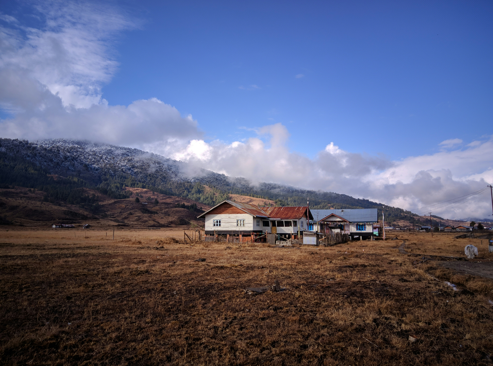

Mechuka
Escape to Mechukha (or Menchukha), a mesmerizing valley nestled 6,000 feet high in the Shi Yomi district of Arunachal Pradesh. Often called the "Mini Switzerland" of India, this hidden gem offers a surreal landscape of snow-capped peaks, lush green meadows, and the crystal-clear Siyom River. Whether you are seeking spiritual peace at the 400-year-old Samten Yangchag Monastery or looking for adrenaline with trekking, rafting, and paragliding, Mechukha is an unspoiled sanctuary where time stands still. Immerse yourself in the warm hospitality of the Memba and Adi tribes, stay in authentic local homestays, and witness a world where fluttering prayer flags meet grazing horses under clear Himalayan skies.